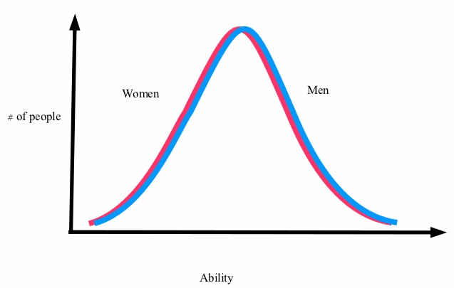
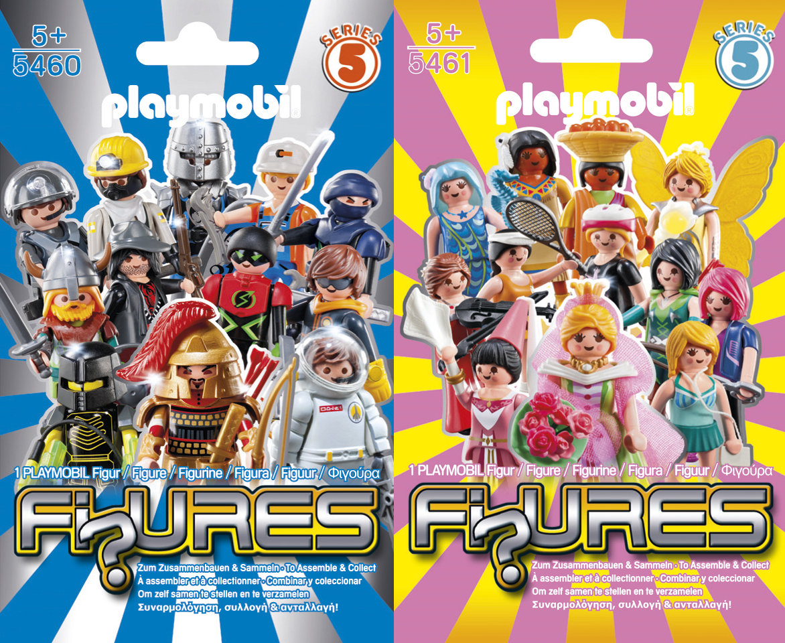
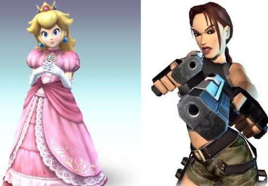
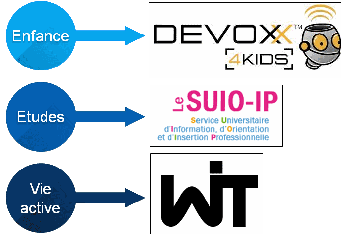
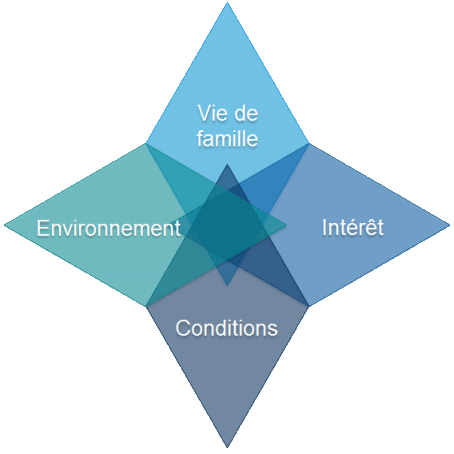
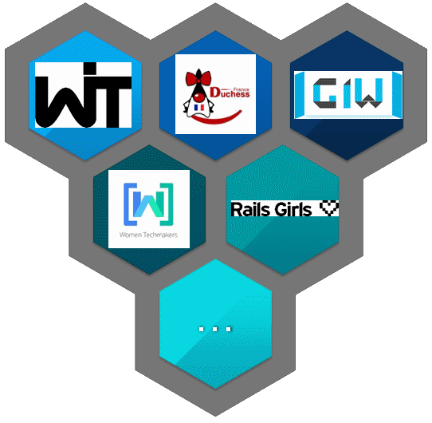

Une fille dans mon équipe?

Women In Technology

Constat

'' Proportions de femmes dans l'IT (en occident)
Constat - bis

Proportions de femmes dans les équipes de dev
Tendance
Elle ne va pas en s'améliorant...

Stagnation du nombre d'étudiantes diplomées de l'option informatique dans cinq écoles d'ingénieurs françaises de 1980 à 2010
Mais pourquoi est-ce qu'elles ne viennent pas ?
C'est comme ça !

Les femmes sont moins attirées par les sciences.
Sauf que ...
Si ce n'est pas inné, c'est peut-être de l'acquis alors ?...
Stéréotypes liés ...
... au genre
... à la méconnaissance des métiers de l'IT
... à la première approche
Dans ce cas-là, on peut sûrement changer quelque chose ?
Oui !
Et celles qui sont déjà là, pourquoi est-ce qu'elles ne restent pas ?
Le taux de femme quittant les métiers de l'IT est deux fois supérieur à celui des hommes
Pourquoi partent-elles ?
- 30% : Mauvaises conditions de travail
- 27% : Conditions de travail incompatibles avec la vie de famille
- 22% : Interêt du travail
- 17% : Environnement de travail déplaisant
Stemming in the tides : Why women leave engineering
Que faire ?
Faire attention à celles qui sont là
Nos actions :

D'autres idées ?
Google Groupe : Nantes-WITWeb : http://www.nantes-wit.fr
Twitter : @NantesWIT